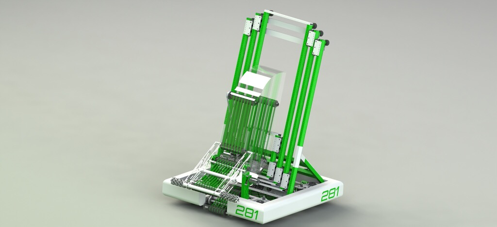
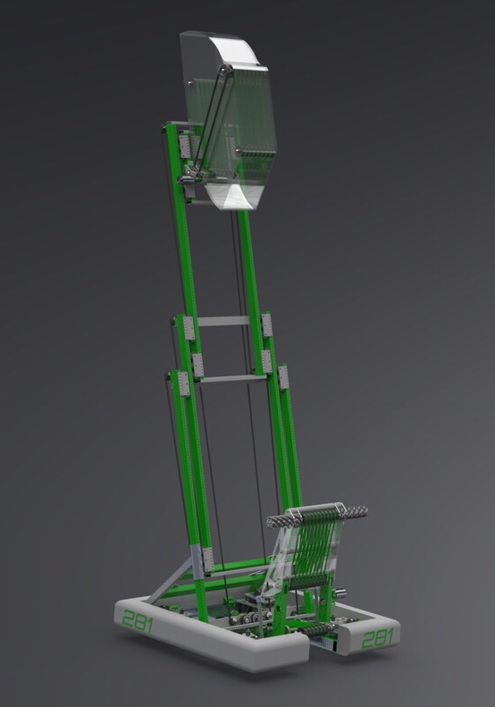
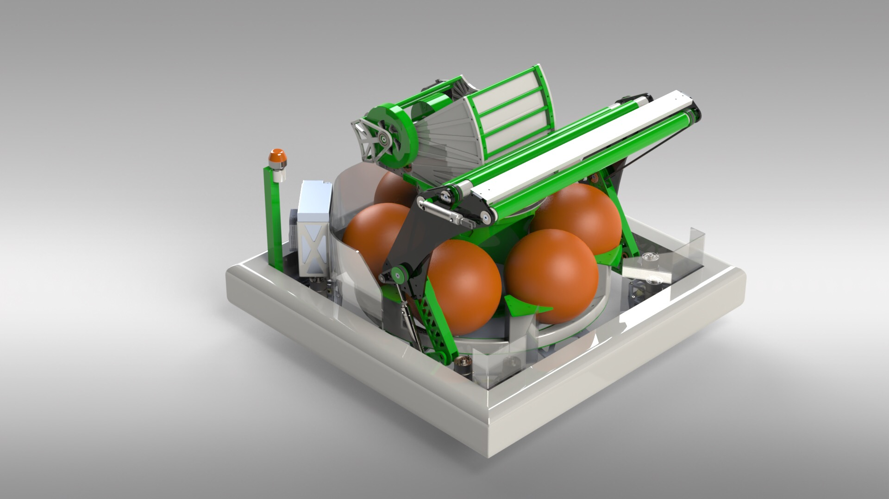
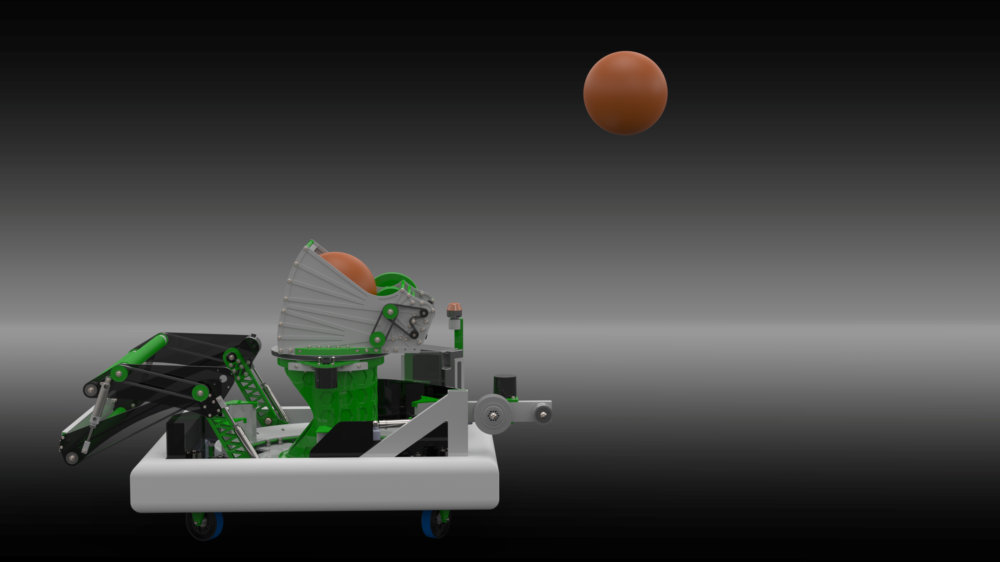
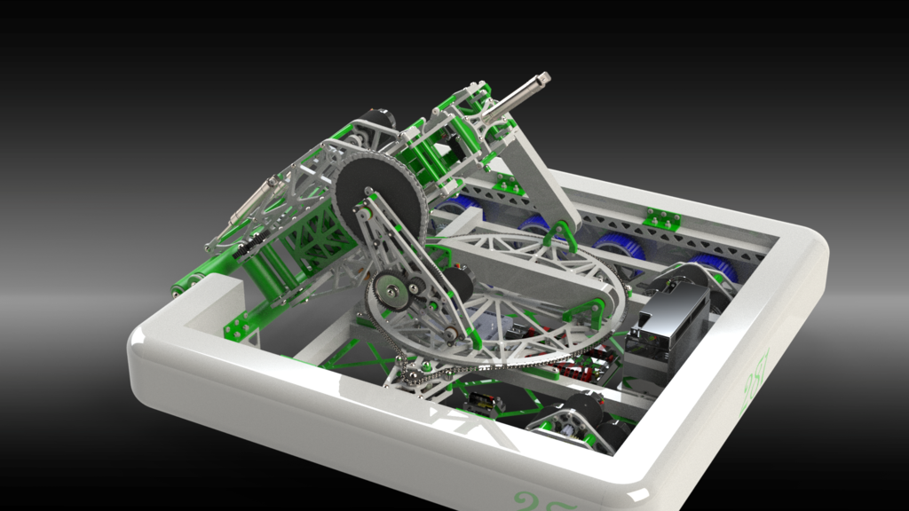
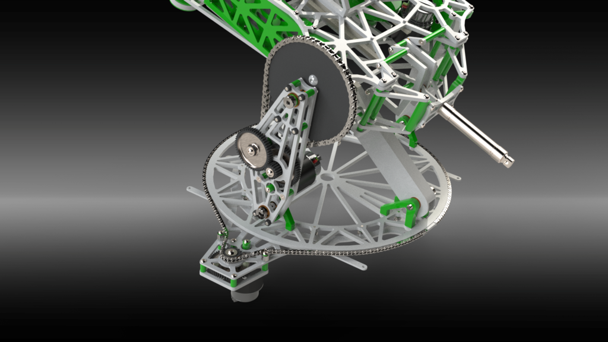
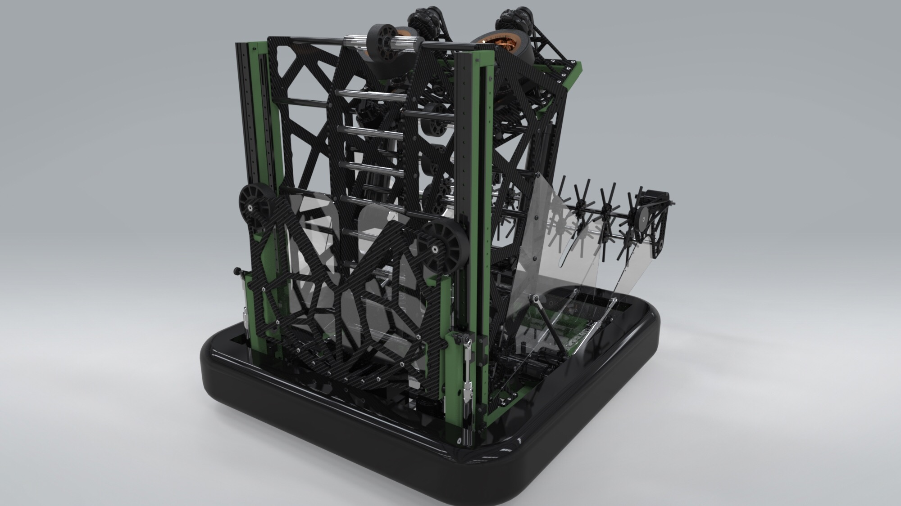

Theo
Over my time in high school robotics, I competed in a number of 3rd party CAD competitions for FIRST Robotics Competition-style robots. Apparently designing robots 6 months out of the year wasn’t enough.
I worked with 1-3 other people in each competition, with each robot designed over the course of 48 hours.
The first three systems were designed in Solidworks and rendered in Solidworks Visualize, with the last system designed in Onshape and rendered in Solidworks Visualize.
CAD competition entries
This is the first robot we designed, which featured a roller-based ball collection system and an linear-motion elvator to deliver the balls. I designed the intake system and elevator power transmission.


The next competition featured similar concepts, but involved a smaller design with a rotary ball indexer and a turret system to shoot balls into a goal. I designed the turret and intake system.


The third robot we designed was intended to pick up large discs and fire them using a turret system. I designed the pickup/turret/firing system.


The final robot I worked on was intended to pick up a large number of footballs and fire them out, in addition to picking up and depositing large thin donut-shaped discs. I designed the flywheel-based indexing and firing mechanism, intended to fire the footballs and give them controllable spin.

